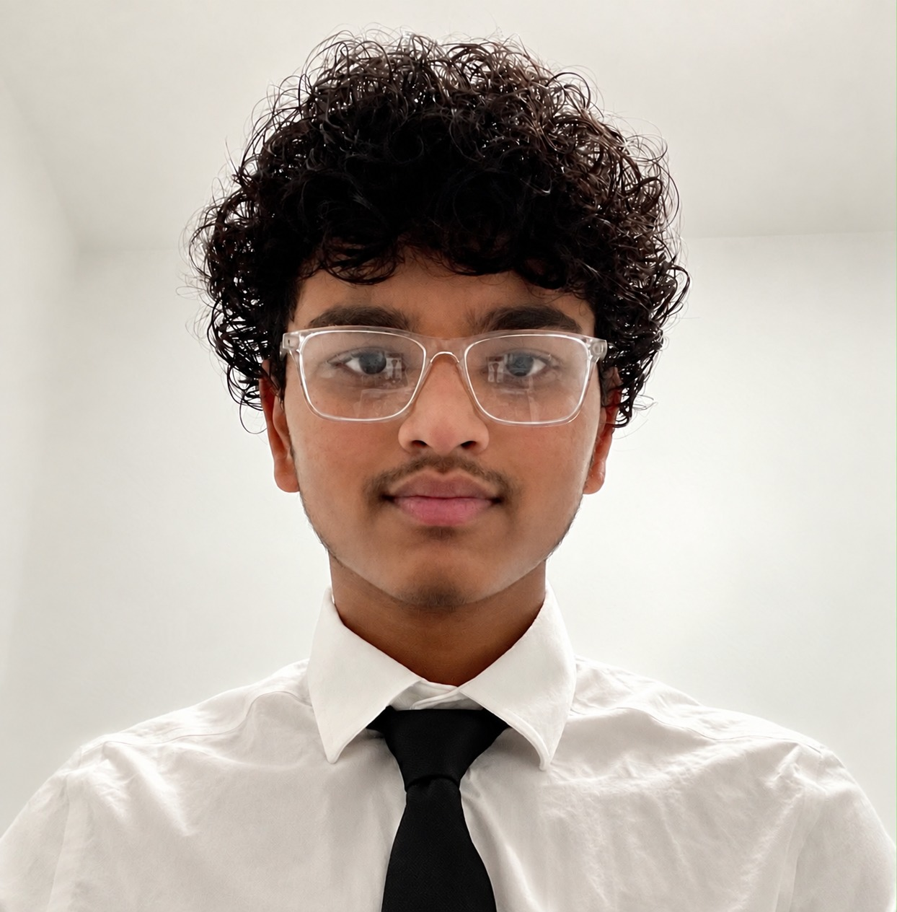

Charlotte, NC · Class of 2027
Hi, I’m Sri.
Sricharan Karthigeyan
A student figuring things out
by building things.
I’m a senior at Ardrey Kell High School, interested in computer science, engineering, and medicine. Some days that means working through a research question; others, it means helping students find a way to volunteer.
This is a place for the research, service projects, and teams that have kept me curious.
A little more about me
SriWhat I’m working on
Research, code, and HourQuest.
Where I spend my time
Service, clinical learning, and teams.
A few milestones
Awards and recognition along the way.